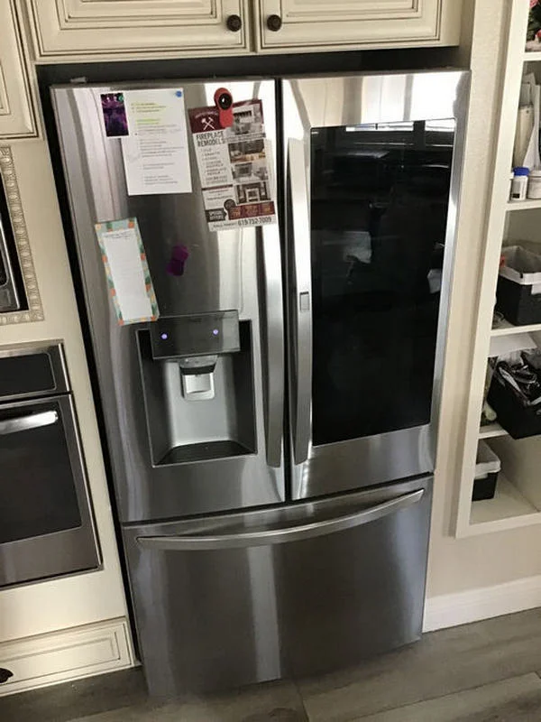

LG Refrigerator Runs Continuously and Does Not Turn Off: Possible Refrigerant Leak, Faulty Temperature Sensor, Compressor Issue, or Door Seal Damage
An LG refrigerator that runs non-stop without switching off is a clear sign that the cooling system is struggling to reach or maintain the required temperature. Under normal operation, the compressor works in cycles: it turns on to cool the chamber and shuts off once the set temperature is achieved. When this cycle disappears, the system compensates by running continuously, which increases energy consumption, accelerates wear of key components, and often indicates an underlying technical fault.
One of the most serious causes of this behavior is a refrigerant leak. The cooling system operates as a sealed circuit where refrigerant circulates between the evaporator and condenser, absorbing and releasing heat. If a leak develops in the tubing, joints, or evaporator, system pressure drops and cooling efficiency decreases. The compressor then runs almost constantly in an attempt to compensate for the loss, but it cannot restore proper cooling performance. In many cases, the freezer may still maintain partial cooling while the refrigerator compartment becomes noticeably warmer. A key symptom of this issue is long compressor operation with very few or no pauses. Simply refilling refrigerant without repairing the leak does not solve the problem, as the gas will continue to escape.
Another common cause is a faulty temperature sensor. This component continuously measures the internal temperature and sends data to the control board. If the sensor begins to provide incorrect readings or intermittently loses connection, the system misinterprets the actual conditions inside the refrigerator. As a result, the control board may assume that the required temperature has not been reached and keep the compressor running indefinitely. Such failures can be inconsistent, with the refrigerator sometimes operating normally and other times switching into continuous cooling mode, which makes diagnosis more complex without proper testing equipment.

The compressor itself can also be responsible for constant operation. In inverter models, the compressor adjusts its speed depending on cooling demand, but it still relies on proper mechanical performance to maintain efficiency. If internal wear reduces compression ability, the system cannot reach the target temperature in a reasonable time, forcing extended operation. In traditional compressors, issues with starting relays, internal pressure loss, or reduced efficiency can also lead to long cycles without proper shutdown. Over time, this behavior often indicates aging or mechanical degradation of the compressor unit.
A damaged door seal is another frequent and often underestimated cause. The rubber gasket around the door ensures airtight closure of the cooling chamber. If it becomes worn, cracked, or deformed, warm air continuously enters the refrigerator. This constant heat influx prevents the internal temperature from stabilizing, forcing the compressor to run without interruption. Even a small gap in the seal can significantly affect performance, especially in warm environments or when the refrigerator is frequently opened. In many cases, the issue is not immediately visible, as the door appears closed but does not provide a proper seal along the entire perimeter.
In some situations, the problem is caused by a combination of factors. A slightly worn door seal together with reduced compressor efficiency or a minor refrigerant leak can create a situation where the system is permanently overloaded. The refrigerator continuously tries to compensate for both heat ingress and reduced cooling capacity, eliminating normal operating cycles entirely. This combination accelerates wear on all major components and increases electricity consumption significantly.
Ignoring continuous compressor operation can lead to serious consequences. The compressor is designed for cyclical work, and constant load increases its operating temperature and mechanical stress. Over time, this can shorten its lifespan and lead to complete failure. Additionally, prolonged abnormal operation may affect the electronic control system, which is calibrated for balanced cooling cycles.
If an LG refrigerator runs constantly without shutting off, proper diagnosis is necessary. This includes checking refrigerant pressure, testing temperature sensors, evaluating compressor performance, and inspecting the door sealing system. Only a full technical assessment can identify the exact cause and restore normal operation. Timely repair not only stabilizes temperature control but also prevents further damage and reduces long-term energy costs.